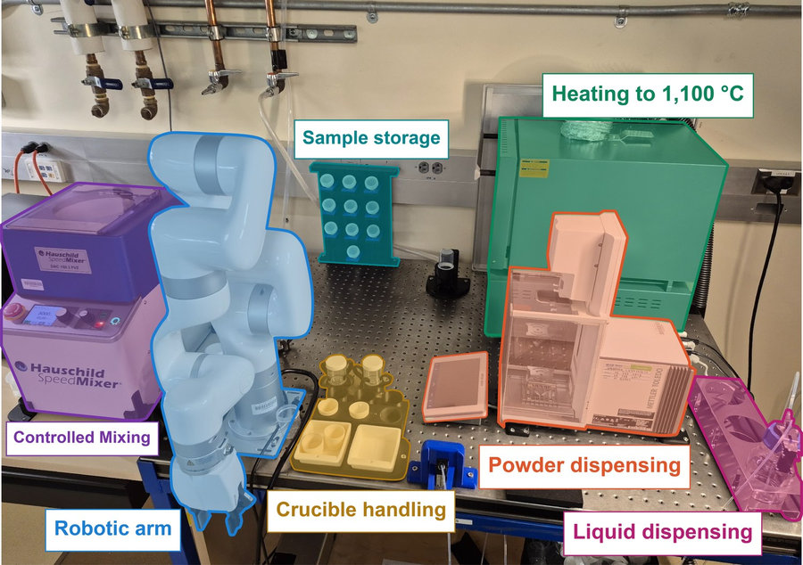
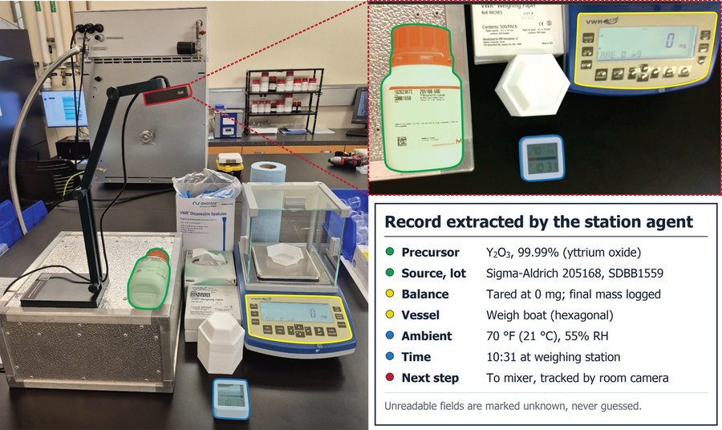
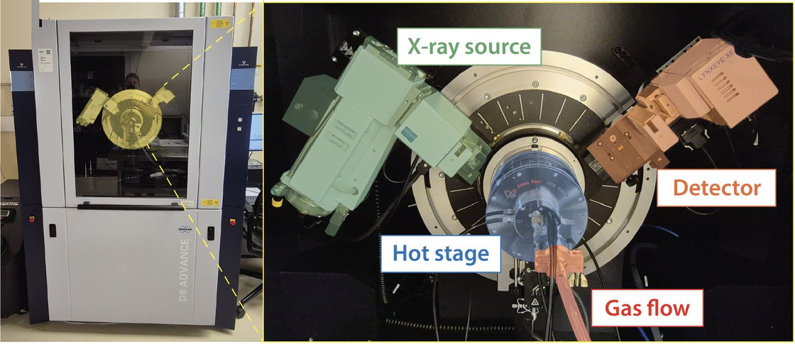
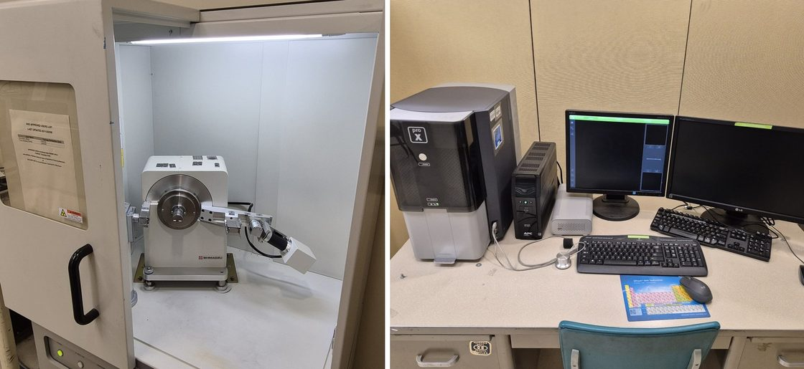
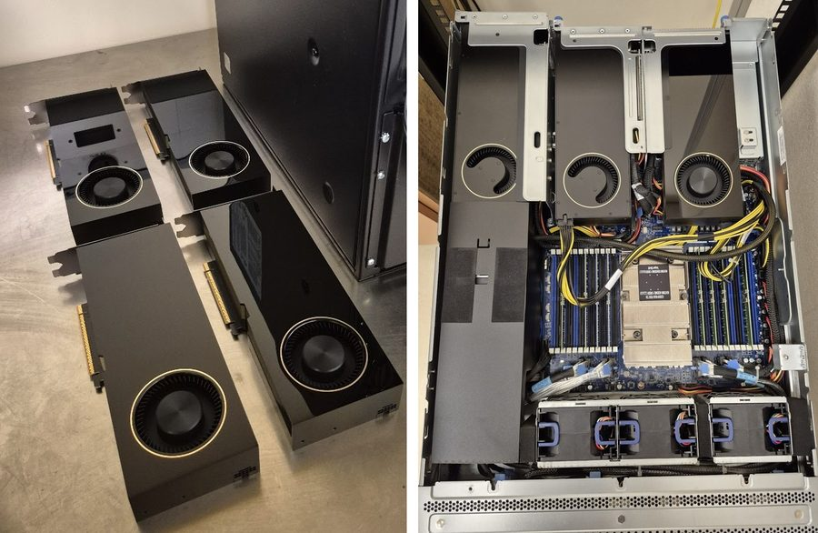

Powders are dispensed, mixed, and transferred by an integrated station built on a single optical table. A Mettler Toledo XPR305DRQ balance doses powder directly into each vial and records the mass delivered. A Hauschild SpeedMixer DAC 150.3 FVZ homogenizes the batch at speeds up to 3,500 rpm. A UFACTORY xArm 6 robotic arm moves samples between the balance, the mixer, the furnace, and storage.
A Thermolyne box furnace sits on the same bench, so a batch is carried through weighing, mixing, and a solid-state reaction in one place. Samples are fired in air at up to 1,100 °C, with the arm loading and recovering the crucibles at each step.

Outside the automated workflow, manual experiments are recorded on video and turned into digital notebooks. A document camera above the weighing station captures each weighing, and a vision-language model reads the footage to extract the reagent identity, lot number, balance reading, temperature, and humidity.
These entries are written to the same database as the ones logged automatically by the robotic station, and each is linked to the diffraction patterns and the phases identified from that batch, so we can trace how preparation affected what formed.

Our Bruker D8 Advance is set up for measurements taken while a sample reacts. An Anton Paar HTK 1200N chamber on the goniometer holds the sample from room temperature to 1,200 °C under flowing, controlled atmospheres, and patterns are collected continuously through the chamber window.
Two sources are available. Cu Kα resolves closely spaced reflections, while Ag Kα lies above the Fe K edge and penetrates further, sampling the full volume of coarse particles. The LYNXEYE XE-T detector discriminates by energy, which suppresses fluorescence from iron-bearing samples.

A Shimadzu XRD-6000 with a Cu source handles routine phase identification on recovered samples, which are checked after each firing step to confirm which phases formed.
A shared Phenom ProX desktop SEM in the department covers particle size, morphology, and local composition by EDS.

A Supermicro SYS-741GE-TNRT server with four NVIDIA RTX PRO 6000 Blackwell GPUs, 96 GB each, was awarded through an NVIDIA Academic Grant. We use it to train machine-learned interatomic potentials, fit diffraction data by differentiable optimization, and analyze patterns as they are collected. A second node with a 32-core AMD EPYC 9334 processor runs density functional theory, nudged elastic band, and phonon calculations.
Larger runs use the UCLA Hoffman2 cluster and national allocations on Purdue Anvil through NSF ACCESS, the NAIRR Pilot, and Brookhaven's Center for Functional Nanomaterials.

Box and tube furnaces for solid-state reactions and controlled-atmosphere annealing to 1,200 °C, a Retsch PM100 planetary ball mill and a benchtop vibratory mill with a zirconia jar for particle-size control and mechanochemical processing, setups for microwave and solution-based synthesis, a Purair ductless fume hood for powder handling, a vacuum drying oven, and an ultrasonic cleaner.